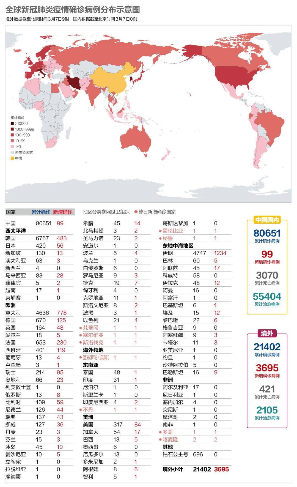
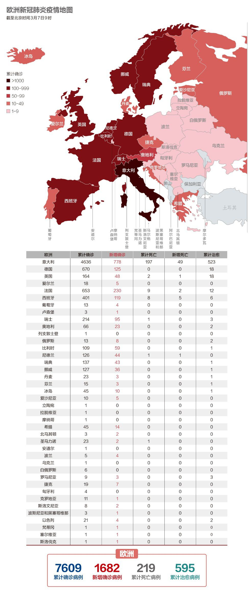

数说疫情0304：海外新增达中国15倍，境外输入75例，美国充满变数
原文链接 备份链接 国内单日新增病例有望很快落到两位数，全国治愈率跨过60%节点。新冠疫情在海外大部分国家和地区（包括美国）还处于暴发的早期阶段。 文 |《财经》数据研究员徐进 图 |《财经》视觉中心 编辑 | 郝洲 一、 国内多地迎来 …

国内31个省区市新增确诊降至两位数；全球累计确诊病例已破10万大关；意大利疫情最严重地区医疗资源已消耗殆尽
文 |《财经》数据研究员徐进 图 |《财经》视觉中心
编辑 | 郝洲
一、国内疫情防控形势继续向好，局面尽在掌控，输入病例占近1/4
今日国内简述：国内3月6日报告累计确诊病例80651例，新增99例，排在伊、意、韩、法、德、西等6国之后。国内非湖北地区本地新增病例仅北京1例。该病例自2月6日起已作为疑似病例治疗排查并集中隔离直至确诊，不会造成进一步传染扩散。湖北非武汉地区连续两日零新增。武汉新增病例终于回落至两位数！兰州、北京、上海、深圳等口岸境外输入病例24例，局面尽在掌控中。
二、全球疫情扩散仍在加速
图1

海外新增已经突破3000，比昨日增量高出近1/3，累计病例迅速突破2万，以目前态势，将会很快3万、4万……世卫组织总干事谭德塞3月6日在日内瓦表示，世卫组织继续建议所有国家将控制传播作为最高优先事项。迄今为止，世卫组织已收到审查和批准40种诊断试验的申请。目前有20种疫苗正在研发，许多治疗药物的临床试验正在进行之中。但距离疫苗的最终面试，有专家认为还需12-18个月。
图2

这张图今天已经眼花缭乱了，继昨天增加德国之后，法国今天也入榜。伊朗单日新增破千，该国医疗系统正面临一场巨大考验。伊朗卫生部部长纳马基介绍说，疑似感染者将接受检测，检测结果为阳性的病例将被居家隔离，并收到配给的药物和使用说明。另据他介绍，伊朗用于新冠病毒检测的医疗机构已达22家，预计下周可达到40家。
三、美国近半数州出现确诊病例
图3

目前，全美共有25个州出现确诊病例。华盛顿州成为美国新冠病毒疫情重灾区，为做好防疫、保障安全，位于西雅图的华盛顿大学3月6日宣布，该校5万名学生从下周一（3月9日）开始上网课，一直上到3月20日。美国会通过紧急拨款83亿元抗击疫情，其中的30亿美元，将给美国大药厂开发疗法与疫苗，3亿元用于确保美国公民都能接种疫苗；另外，22亿元用于预防、准备和回应，10亿元投入缓解地方政府与卫生系统的财务压力。
图4

一夜之间，美国又新增84例患者，其中有21例来自“至尊公主”号邮轮，船上约3500人将陆续接受新冠病毒检测。邮轮所属公司公主邮轮公司（Princess Cruise Lines）称，目前船上有35人感到不适。首批检测预计24小时内会有结果。
四、韩国将在大邱市展开更大范围的排查
图5

韩国中央安全对策本部称，大邱普通市民的诊断检查阳性率在9%~10%左右，目前还不能掉以轻心，为了阻止地区社会感染，今后几周必须集中对大邱市民进行诊断检查，致力于发现确诊患者。
五、意大利伦巴第大区医疗资源耗尽
图6

德国病例最集中的是北莱茵-威斯特法伦州，已经出现了281例，该州疫情爆发点海恩斯贝格县已关闭所有中小学和幼儿园直到3月15日。法国总理菲利普宣布加强国内疫情最为严重的瓦兹省和上莱茵省的防疫措施，包括关闭中小学和幼儿园以及限制集会等。他同时表示，法国仍处在遏制病毒在境内扩散的“第二阶段”，“虽然疫情升级不可避免，但法国的卫生系统有能力应对”。
图7

过去24小时，意大利新冠肺炎疫情已从79座城市，蔓延至89座城市，死亡患者197人。意大利卫生官员称，意大利头号疫区伦巴第大区约10%的医务工作者已被感染。目前，当地70%的外科手术已被迫延期，当地其他门诊服务也因调拨人员而将从3月9日后全部暂停。伦巴第地区的医疗资源已消耗殆尽。意大利是欧洲医疗最为发达的国家之一，每千人约有4.09名执业医师，伦巴第又是意大利经济最为发达的地区，医疗资源最丰富。
【特别说明：以上统计，2月28日前为世卫组织官方统计数据，数据截止时间为北京时间每日17时；从2月28日开始，数据由《财经》根据公开资料统计，截止时间为北京时间每日9时】
六、全球疫情数字速览：
1、【库存200万份试剂】据统计，从检测试剂盒批准上市以来，截至3月5日，中国累计供给1537.4万人份的试剂盒，日均供应量是34.16万人份，目前生产企业的库存还有大约200万人份，完全能够满足湖北省和全国其他地区的检测需求。
2、【美军4人确诊】美国国防部主管卫生事务的助理部长麦卡弗里（Thomas McCaffery）3月6日向众议院证实，美国军队中已有4人确认感染新冠肺炎，另有12例疑似病例。目前美国有9个至10个美军军事基地具备检测能力。
3、【第一批援韩物资】中国驻韩国大使邢海明3月6日通报，中国政府决定向韩方提供一批物资援助，包括10万只N95口罩、100万只医用外科口罩、1万套医用防护服，还愿向韩方提供5万人份检测试剂，以支持韩国政府和人民抗击新冠肺炎疫情
小结：自1月26日以来最低 ，经历39天的艰苦奋战，武汉的新增病例终于首次降到两位数。如今，武汉每日新增确诊病例的80%以上由疑似病例转入，已进入“去存量”的阶段，局面尽在掌控。伊朗、意大利等国的疫情核心区医疗资源被严重消耗。尽管各国政府都在紧急拨款应对疫情，但是否足以控制住疫情蔓延势头，仍待观察。

▲点击图片查看更多疫情报道
责编 | 黄端 duanhuang@caijing.com.cn
本文为《财经》杂志原创文章，未经授权不得转载或建立镜像。如需转载，请在文末留言申请并获取授权。
原文链接 备份链接 国内单日新增病例有望很快落到两位数，全国治愈率跨过60%节点。新冠疫情在海外大部分国家和地区（包括美国）还处于暴发的早期阶段。 文 |《财经》数据研究员徐进 图 |《财经》视觉中心 编辑 | 郝洲 一、 国内多地迎来 …
原文链接 备份链接 【财新网】（记者 丁捷 综合）全国新冠肺炎现有疑似病例首次出现下降，2月9日一天内全国累计“消化”疑似病例9361例，其中湖北省为7472例，这也与疑似病例检测的速度加快有关，但“消化”的疑似患者去了哪里，是否全部进 …
原文链接 备份链接 现在校园里还没有人戴口罩，但国内的亲人总是打电话说美国疫情严重，出门一定要戴口罩，这让他非常为难。 文｜李 莹 今年春节，我到美国旅游，结果因为新冠肺炎疫情，回程航班被取消了……一言难尽。这是我滞留美国的第42天，西 …
原文链接 备份链接 随着新冠肺炎疫情的蔓延，在过去的一天，韩国、意大利、伊朗等多国新增确诊数继续上升，中国以外累计确诊病例超过15000例。 世卫组织：部分国家对新冠肺炎准备不足 当地时间3月5日，世卫组织在日内瓦召开新冠肺炎疫情例行发 …
原文链接 备份链接 境外累计确诊病例即将超过2万。美国很可能有上千例潜在感染病例以及他们的密切接触者未能被及时发现和隔离，到目前为止，“我们看到的美国官方病例数字可能只是冰山一角”。 文 |《财经》数据研究员徐进 图 |《财经》 …